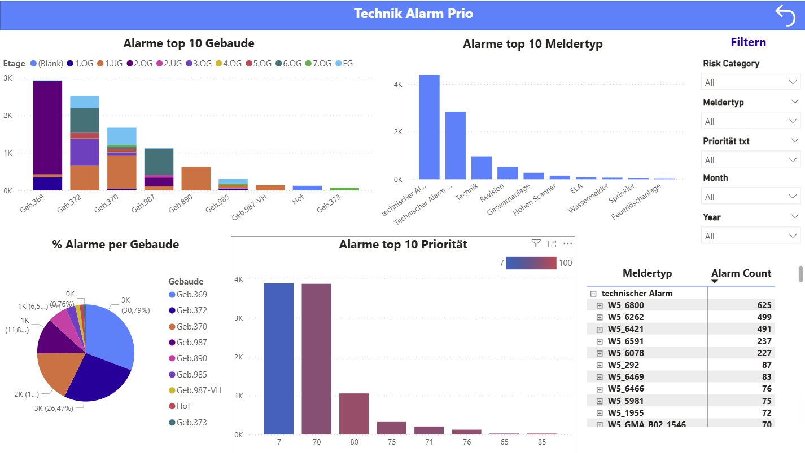
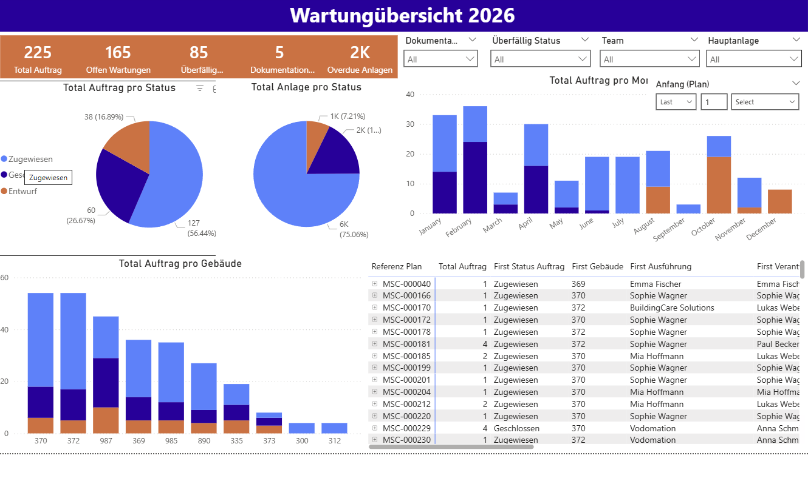
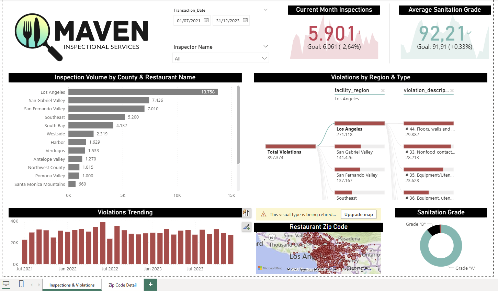
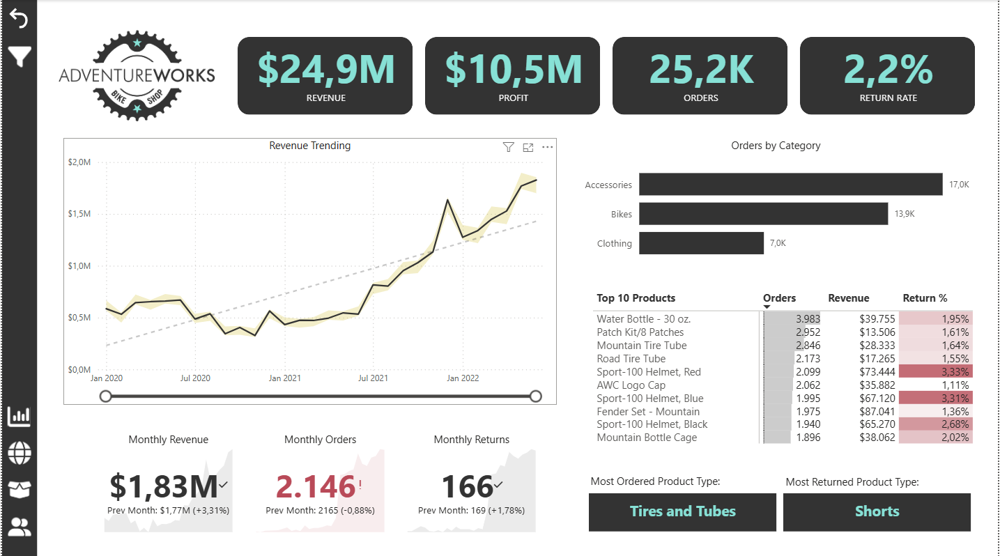

Developed an interactive Power BI dashboard to monitor and prioritize technical alarms across a nine-building facility portfolio, covering more than 10,000 recorded events. The report breaks down alarms by root cause—technical fault, maintenance, human error, human action, and Scharfschaltung—and by system origin, including HVAC/BMS, fire protection, elevators, and gas suppression, to show where failures concentrate. Key KPIs such as average resolution time, maximum duration, and total downtime give maintenance teams a quick read on which alarms carry the greatest operational impact. Hourly and monthly trend views, alongside top-10 rankings by building and fault description, highlight recurring issues and peak failure windows across the year. A dedicated risk view scores alarms as Critical, High, Medium, or Low and lets users filter by alarm type, priority, month, and year, turning raw alarm logs into a tool for proactive, risk-based maintenance planning.

A Power BI maintenance dashboard (“Wartungsübersicht 2026”) was developed to provide facility management with a real-time view of work orders across the building portfolio and technical asset base. The report was structured into three layers: a status overview for leadership, an asset-level breakdown where maintenance-heavy equipment groups are identified, and an overdue-orders view built to drive escalation and SLA compliance. Order volume, monthly planning trends, and overdue ratios were visualized through stacked bar charts, donut charts, and a bubble scatter plot. Interactive filters for team, main asset, documentation status, and overdue status were added to support both executive-level checks and technician-level drill-downs. The dashboard was designed to surface risk early, direct field teams to the highest-impact backlog, and prevent overdue maintenance from becoming a compliance issue.


This Power BI dashboard gives an executive overview of restaurant inspection performance, combining inspection volume, sanitation grades, and violation trends in one interactive report. It enables users to monitor current-month inspections against targets, analyze violations by region and type, and identify geographic patterns through zip code mapping.

This Power BI report provides a clear snapshot of AdventureWorks business performance by bringing revenue, profit, orders, and return rate into one view. It helps decision-makers quickly track monthly trends, compare category-level order volumes, and identify top-performing as well as high-return products. The dashboard highlights key monthly KPIs and product-type insights, making it easier to spot performance changes at a glance. With its clean visual structure and interactive elements, it supports fast, data-driven business decisions. For going deeper into Branch Evaluation, Product Details, Customer Details and futher, one just needs to go to other pages of this report.

This project explored how RFID can improve warehouse and inventory management through real-time tracking, fewer manual errors, and better process visibility. I supported the work by creating a Tableau dashboard to analyze missing articles and highlight inventory-related losses. The study also included cost, risk, and ROI analysis, showing that RFID implementation could deliver clear operational and financial benefits.

This project showcases my work in data acquisition, data wrangling, visualization, and business-oriented analysis through a structured and interactive web format. Across the project, I applied tools such as Tidyverse, ggplot2, web scraping, and API-based data collection to solve practical analytics challenges. This project is based on multiple real-world datasets, including bike sales data, weather data from the OpenWeather API, bike product data scraped from the Radon Bikes website, patent datasets, and COVID-19 case data.